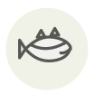

Lieu jaune
Pollack
| Nom latin | Pollachius pollachius |
|---|---|
| Famille | Poissons & fruits de mer |
| Origine | Bretagne, pêché à la ligne |
| Saison | octobre – mars |
| Goût | Sucré · Doux · Iodé |
| Prix courant | 15–25 €/kg |
Ce que c’est
Lieu jaune et lieu noir sont deux poissons différents, et l’écart de prix va du simple au quintuple : le jaune se pêche à la ligne, en petits bateaux, à la pointe de Bretagne, et débarque les flancs intacts. La ligne latérale courbe et la mâchoire inférieure proéminente sont les deux repères à l’étal.
En cuisine
Les feuillets sont larges et lâchent d’un coup : cuisez-le en pavés épais et arrêtez tôt, 50 °C à cœur puis deux minutes hors du feu. La cuisson peau croustillante réussit ici là où elle échoue sur le cabillaud.
S’accorde avec
Beurre Poireau Vinaigre de cidre Pomme de terre Persil Salicorne Citron Vinaigre de vin blanc
Même espèce
De saison en même temps
Grondin Églefin Merlu Saint-Pierre Praire Pagre
Une erreur ici, ou un oubli ? Dites-le nous